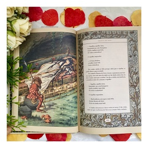

Irmãos Grimm são dois irmãos alemães que entraram para a história como folcloristas e também por suas coletâneas de contos infantis. Jacob Ludwing Carl Grimm (1785-1863) nasceu em Hanau, no Grão-ducado de Hesse, na Alemanha, no dia 14 de janeiro de 1785 e Wilhelm Carl Grimm (1786-1859) também nasceu em Hanau, no dia 24 de fevereiro de 1786. Os Irmãos Grimm passaram a infância na aldeia de Steinau, onde o pai era funcionário de justiça e Administração do conde de Hessen. Em 1796, com a morte repentina do pai, a família passou por dificuldades financeiras.
Em 1798 Jacob e Wilhelm, os filhos mais velhos, foram levados para a casa de uma tia materna na cidade de Hassel, quando foram matriculados no Friedrichs Gymnasium. Depois de concluído o ensino médio, os irmãos ingressaram na Universidade de Marburg. Estudiosos e interessados nas pesquisas de manuscritos e documentos históricos receberam o apoio do professor Friedrich Carlvon Savigny.
O professor colocou sua biblioteca particular à disposição dos irmãos, onde tiveram acesso às obras do Romantismo e às cantigas de amor medievais. Depois de formados, os Irmãos Grimm se fixaram em Kassel e ambos ocuparam o cargo de bibliotecário.
Em 1807, com o avanço do exército francês pelos territórios alemães, a cidade de Kassel passou a ser governada por Jérome Bonaparte, irmão mais novo de Napoleão, que a tornou capital do reino recém-instalado Reino da Vestfália. Essa situação despertou o espírito nacionalista do romantismo alemão. A busca das raízes populares da germanidade estava em voga. Quando os irmãos Grimm deram início às suas pesquisas, os poetas Achim Von Arnim e Clemens Brentano já haviam publicado uma coletânea de versos de exaltação popular, Des Knaben Wunderhorn (A Trompa Mágica do Menino), o que despertou ainda mais a curiosidade dos irmãos às narrativas populares, registradas nos livros antigos, e a busca de suas raízes culturais.
Os irmãos reivindicaram a origem alemã para histórias conhecidas também em outros países europeus – como Chapeuzinho Vermelho, registrada pelo francês Charles Perrault, bem antes do século XVII.s No final de 1812, os irmãos apresentaram 86 contos, coletados da tradição oral da região alemã do Hesse, em um volume intitulado “Kinder-und Hausmärchen” Contos de Fadas para o Lar e as Crianças. Em 1815, lançaram o segundo volume, Lendas Alemãs onde reuniram mais de setenta contos.
Em 1840, os irmãos mudaram-se para Berlim, onde iniciaram seu trabalho mais ambicioso: Dicionário Alemão. A obra, cujo primeiro fascículo apareceu em 1852, não pode ser terminada por eles. Os Irmãos Grimm faleceram em Berlim, Alemanha, Wilhelm no dia 16 de dezembro de 1859 e Jacob no dia 20 de setembro de 1863.
Entre os contos coligidos pelos irmãos Grimm estão:
Fonte: Biografia de Irmãos Grimm